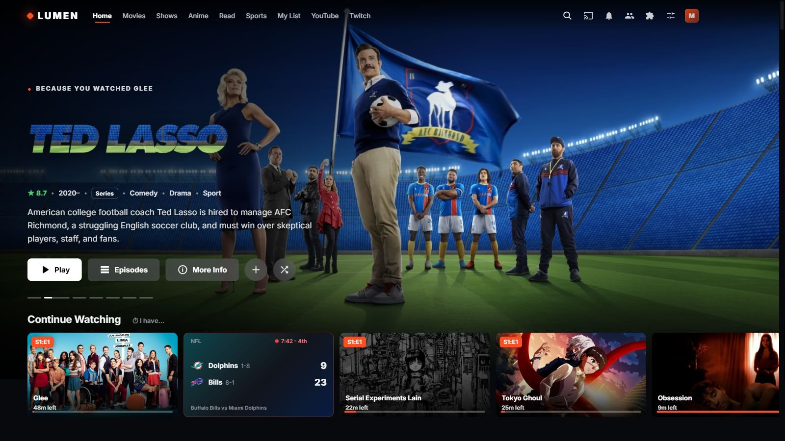
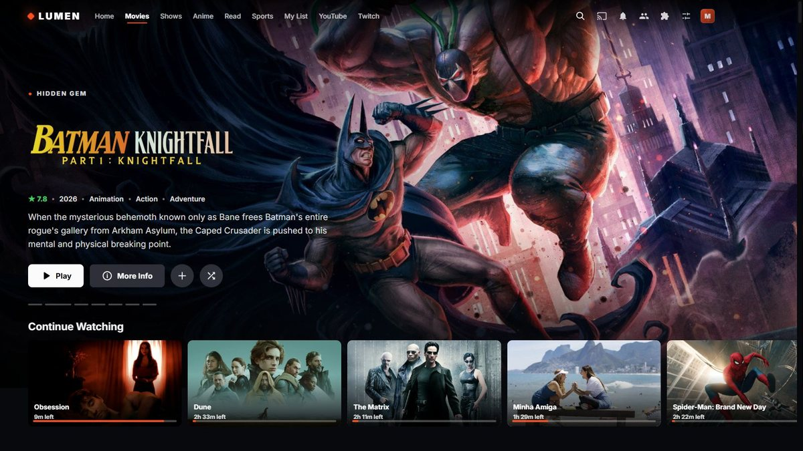
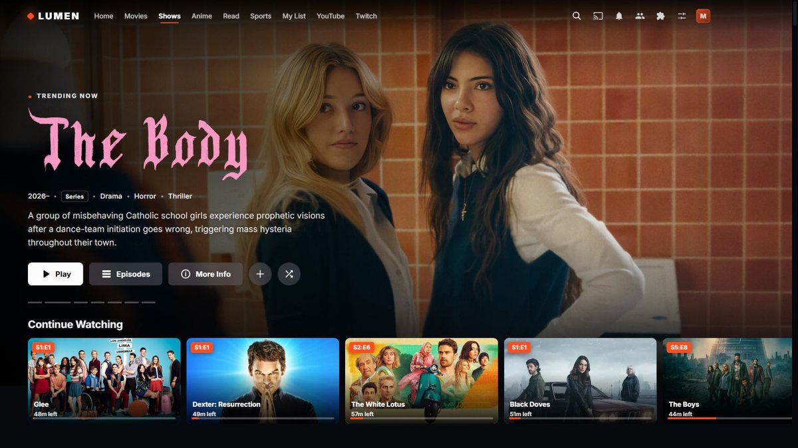
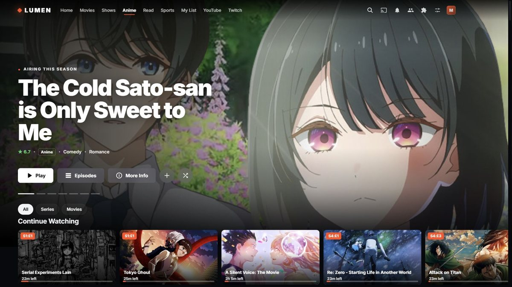
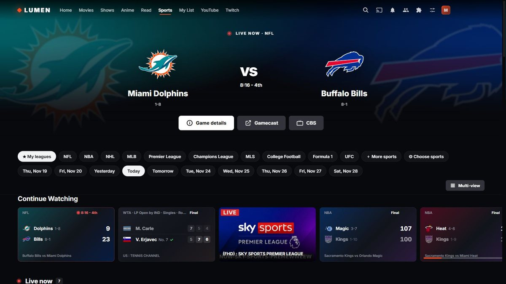
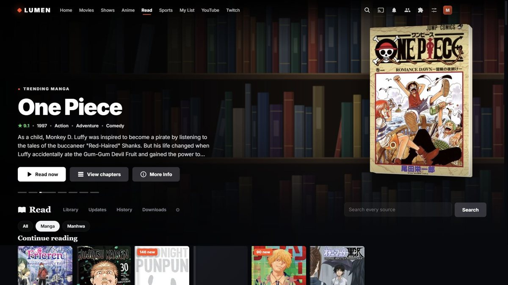
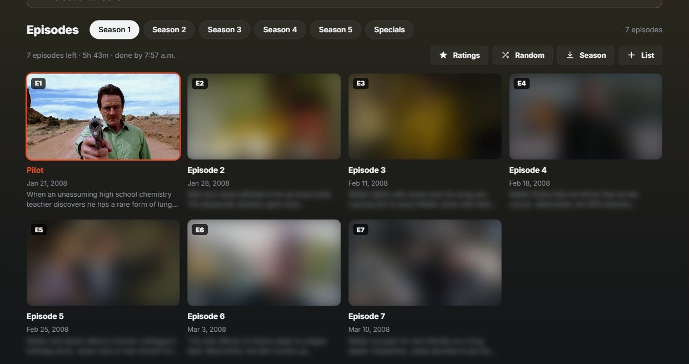
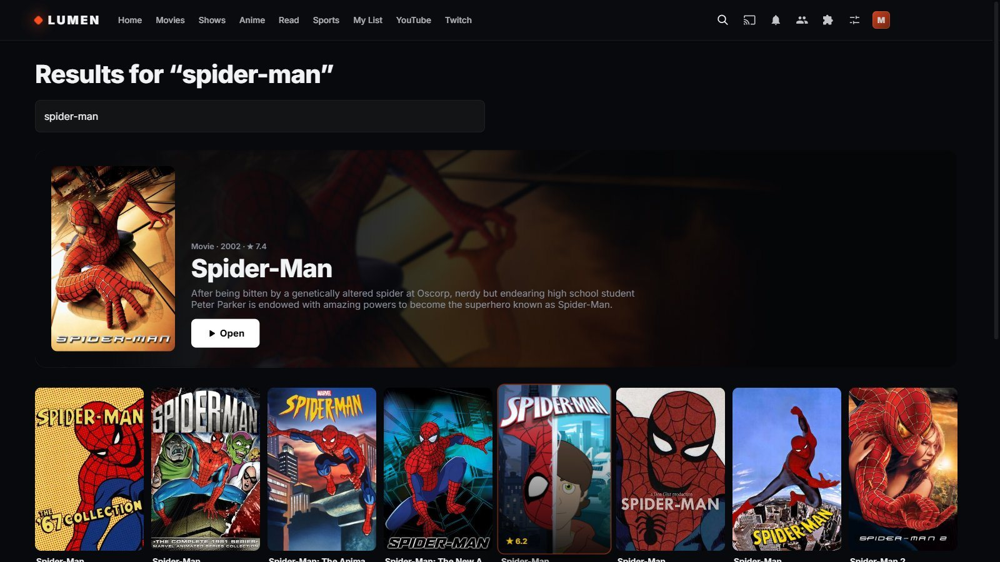
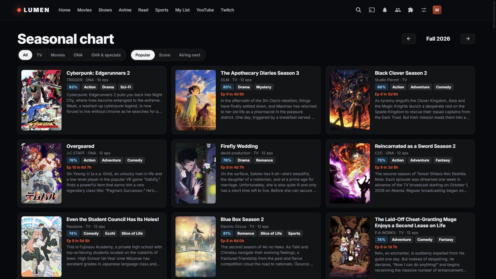

What makes Lumen different
I can't lie I am too lazy to tell yall about the features Lumen has so just open up the app and go to the patch notes. Also wafffles or pancakes?
Movies, shows, anime, live sports, manga and manhwa, from the add-ons you choose. Free, no ads, no account, and it never spoils the story.
Also The Disappearance Of Haruhi Suzamiya is the greatest movie of all time sorry CITY BOYYYYYYYYYYYYY.
Windows · Android · Android TV · Linux · Mac (beta)

Lumen brings everything your add-ons offer into one place and shows each title once, however many sources have it.





I can't lie I am too lazy to tell yall about the features Lumen has so just open up the app and go to the patch notes. Also wafffles or pancakes?
Tap any picture to see it full size.



Rows mix every source and each title shows once, however many add-ons have it.
Continue watching and My List follow you, through your own Google Drive. No Lumen account.
Scan a QR code and your phone controls the player on your PC.
Build a theme in seconds and share it as a short code that works on PC, phone and TV.
Install a whole set of add-ons in one click, or share yours. Keys are stripped out automatically.
Add your Real-Debrid key once and every add-on that needs it uses it.
Separate profiles with their own history, list and limits.
See which episodes are the best before you press play, and rate them yourself.
The TV app is built for a remote from the first screen to the last.
Black & white or colour, theatrical or extended, IMAX or widescreen. Switch mid-movie and keep your place.
Watch Haruhi in broadcast or story order, or shuffle shows meant to be watched in any order.
Franchises like Steins;Gate and Kara no Kyoukai in the order the story happens, not just the order they came out.
Lumen doesn't come with any movies or shows of its own. Everything comes from add-ons: small services made by other people that list what exists and where it can play. Guides written for apps like Stremio work for Lumen too.
The basics in one click: movie and show info, posters, anime and subtitles. Then add your own streaming add-ons on top.
Open the Starter packInstall links on add-on websites open right in Lumen. Have Real-Debrid? Add your key once.
Read the guideNo ads, no account.
./install.sh. Install mpv for the best playback.Version 3.2.2 →
Mac BetaApple chips (M1 and newer). Double-click to unpack. Not tested on a real Mac yet, so tell us how it goes.Version 3.0.0 beta →
Other versions: Android armv7 (older phones and TV sticks) · Linux ARM · Mac with Intel
Lumen is free and isn't code-signed (that costs money every year), so your device asks once before opening it. That's normal for small free apps.
Lumen.exe.More info.Run anyway. It won't ask again..apk.Install unknown apps for your browser or file manager, then go back.Install. On a TV, a file manager app (like Downloader) makes this easy.Lumen into Applications.System Settings → Privacy & Security and click Open Anyway.xattr -cr /Applications/Lumen.app, then open it again../install.sh to add Lumen to your app menu.mpv from your package manager for the best playback.Ask for help, share your setup, and grab add-on packs other people made.
Add-on packs shared by other people. Open one in Lumen and it installs in one go, with your own keys.
Browse packsIn Lumen: Add-ons → Packs → Share your add-ons, then Upload to the pack gallery. Your keys are always left out.
Submit a packLumen is the player; add-ons are where everything comes from. An add-on is a small online service, made by someone else, that tells Lumen what exists (movie and show info, posters, catalogs, subtitles) and, for some add-ons, where it can be played. You add one by pasting its link (it ends in manifest.json) into Add-ons, by pressing Install on an add-on's website, or by adding a whole pack at once. Lumen works with the same add-ons as apps like Stremio, so any guide for those works here too. The Starter pack gives you the basics in one click.
Is grass green? Is the sky blue? Yes. Some add-ons work with paid services like Real-Debrid, but Lumen itself costs nothing and has no ads.
I could care less about your data so don't worry about that. No accounts and no analytics. Your history and settings stay on your device. Sync is optional and uses your own Google Drive.
Yes. Lumen uses the same add-ons as apps like Stremio. On a PC it can copy your add-ons, library and Continue Watching without changing anything in the other app, and any add-on's manifest link works too. See the setup guide.
Yes. Turn on Settings → Open add-on install links in Lumen, and the Install button on an add-on's website opens Lumen and asks if you want to add it.
Come say it in the Lumen Discord, or open an issue on GitHub.